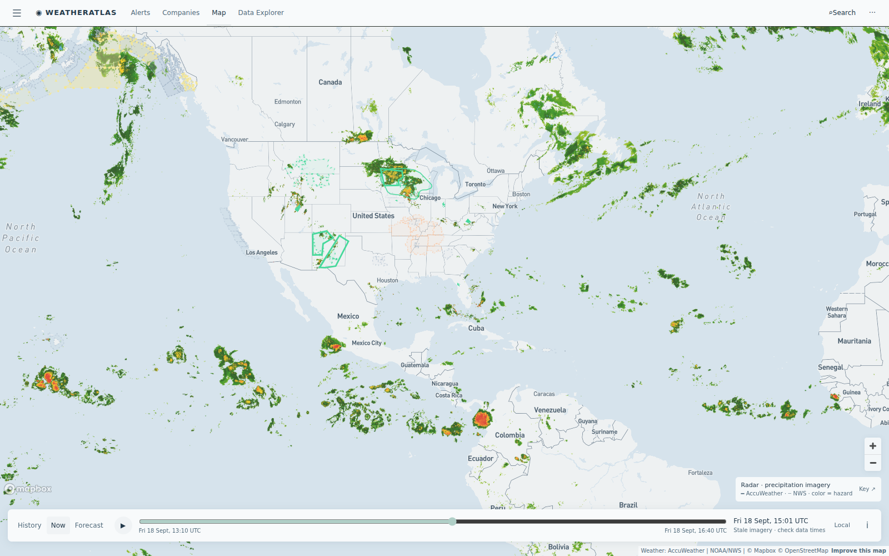

Daily severe-weather intelligence for LNG, refining, offshore, and terminal operators.

Live radar + alerts, 18 Sept 14:30 UTC. No tropical cyclones in any basin. The outlined corridors carry today's footprint: Midwest flood regime (flood watches shift east into Wisconsin and northern Illinois tonight), Mountain flood watches over Wyoming field country, heat advisories from St. Louis to Alabama, and AccuWeather flash-flood threats live across New Mexico Permian operators. Interactive radar + hurricane tracker: accuweather.taborlin.co.
| System | Status | Energy-asset impact |
|---|---|---|
| AL99 (E Subtropical Atlantic, SW of Azores) | 60% / 48H | Tropical depression may form this afternoon; stays far offshore over open water — no Gulf or Caribbean threat this week, but the statistical peak of hurricane season is now |
| Midwest flood regime | ACTIVE | Stalled front drives a weeklong flash-flood threat extended through Sunday; flood watches shift east tonight into southern Wisconsin / NW Illinois / NE Iowa with 1–3" and isolated 3–5" totals — barge loading, rail product moves, and yard drainage exposed (fertilizer and chemical plants under active flash-flood alerts today) |
| Northern Rockies / Wyoming flood watches | ACTIVE | NWS flood watches cover 30+ zones across Montana and Wyoming field country — conventional field roads, pad access, and crew moves at washout risk |
| Midcon heat dome | ACTIVE | 97–99°F peaks across the Kansas–Oklahoma refining belt with heat advisories from St. Louis to Alabama (incl. Wood River corridor) — worker-safety limits on outdoor unit work, cooling-water and power-burn lift |
| Permian flash-flood flags (NM) | ACTIVE | AccuWeather severe flash-flood threats live on Bone Spring / Avalon corridor operators — pad lightning stand-downs and haul-road exposure in tight-crude country |
| Mississippi Coast convective afternoons | REPEATING | 51% t-storm windows 2–4 PM today and again Saturday and Sunday afternoons at the Pascagoula refining corridor — three straight storm-capable afternoons while free feeds read 1% |
| Caribbean / Puerto Rico disturbance | WATCH | Special weather statements across PR/USVI LNG and refining sites (Aguirre FSRU, Peñuelas LNG, St. Croix) — unsettled but no organization signal |
Same hours, same coordinates (Pascagoula refining corridor, 30.36°N 88.55°W, 4 PM local today), two very different planning answers:
99°F heat dome today vs 0–1% on free data — and AccuWeather's 56% Sunday-evening storm window at a site whose 2007 flood shutdown is ops history. Weekend night-shift planning should see it coming.
Live brief →51% t-storm windows 2–4 PM today, Saturday, AND Sunday while free data reads ≤1% all weekend — the forecast-gap headline of the day.
Live brief →Oil down a third session on easing supply fears while Henry Hub ticks UP on the Midwest/South heat — today's weather-trade read ties the heat dome to the gas bid.
Market note →Asset-pinned AccuWeather + NWS alert board with lightning feed — the same data powering these briefs.
accuweather.taborlin.co →